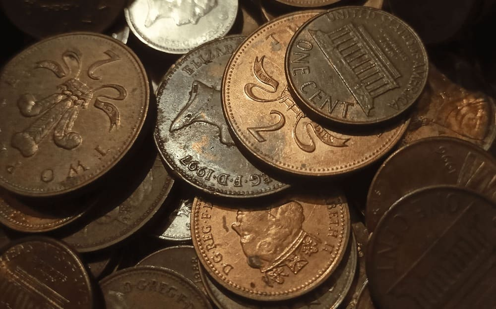
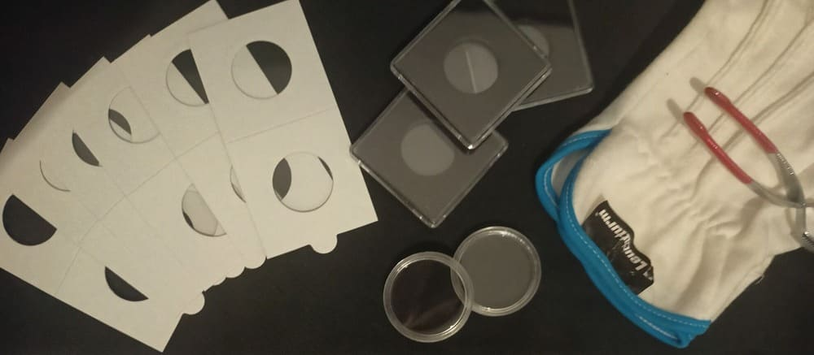
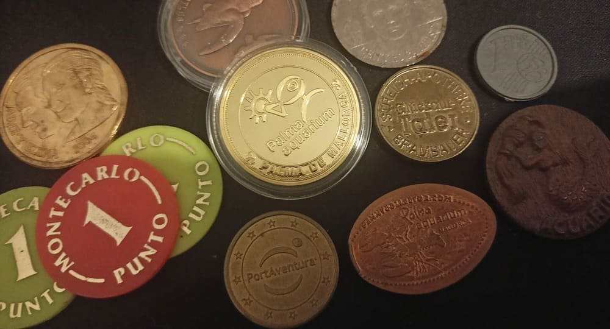

¿Qué es una moneda?

Una moneda es una pieza de metal acuñado con forma generalmente redondeada que se emplea como objeto de cambio de bienes y servicios. Aunque esta definición sacada de la Wikipedia se queda corta.
Una moneda es más que un trozo de metal con el que pagar: una moneda es arte, es historia y, como tales, hay una serie de personas que tenemos la labor de preservar estas obras: los numismáticos.
Numismática es una palabra poco conocida. Si buscamos su significado encontraremos que es coleccionar monedas, billetes y medallas y los que la practican son los numismáticos.
¿Cómo se conserva una moneda?

Una pregunta fácil que no tiene una respuesta igual de sencilla. Cada moneda tiene una composición diferente, algunas incluso están hechas con más de un metal, y cada metal tiene unas propiedades y una capacidad de corrosión diferentes.
Ahora mismo la mejor opción es el encapsulamiento. Se pone la moneda en un recipiente de un polímero plasticoso neutro con un tamaño ligeramente mayor al de la moneda, para que una vez dentro de la cápsula esté protegida de agentes oxidantes del aire y golpes.
Hay cápsulas de distintas calidades: desde cartoncitos con una ventana de plástico neutro hasta las capsulas quadrum intercept (cápsulas cuadradas con una espuma negra que absorbe la humedad y los agentes nocivos). Obviamente las últimas son más caras, pero vale la pena gastar más para piezas de alto valor.
Cada persona encuentra su forma de protegerlas. Me han regalado grandes cantidades de monedas que habían sido guardadas durante décadas en una bolsa de plástico o en una caja de cartón, algunas sorprendentemente se encontraban en buenas condiciones.
Más que monedas

Los billetes comparten con las monedas el hecho de tener un valor monetario respaldado por un banco estatal. Su composición es de una fibra sintética, como fibra de algodón, aunque los más modernos estan hechos con polímero de polipropileno (un plástico).
Las medallas entran en lo conocido como exonumia, aunque la palabra sea aún menos conocida que numismática. La exonumia consiste en coleccionar artículos similares a monedas: medallas, réplicas, fichas, incluso monedas reales convertidas en recuerdos de lugares. En general, aquello que no tenga un valor monetario real.